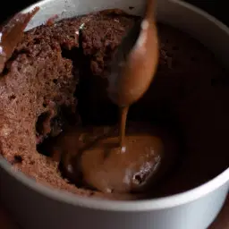

Voltar à página inicial
Bolo de caneca
Sentiu aquela vontade de comer um docinho? Esse bolo delicioso fica pronto em só 20 minutos e vai te satisfazer por completo!
Tempo de preparo: 20min.

Ingredientes:
- 4 ovos
- 3/4 de xícara (chá) de óleo
- 4 bananas picadas
- 2 xícaras (chá) de farinha de trigo
- 1 colher (sopa) de fermento em pó
- 2 xícaras (chá) de açúcar
- 1 colher (chá) de canela em pó
- Margarina e farinha de trigo para untar
- Canela a gosto para polvilhar
- Mel a gosto para derramar
Modo de preparo:
- Bata todos os ingredientes no liquidificador até ficar cremoso
- Distribua a massa em 8 canecas de porcelana com capacidade para 300ml untadas e enfarinhadas
- Coloque em uma fôrma e então leve ao forno médio, preaquecido, por 10 minutos
- Retire, polvilhe canela, derrame mel e sirva em seguida.
Informações nutricionais
| Medida |
Calorias |
Carboidratos |
Proteínas |
| 10g: |
20 |
2,5 |
5
|
| Por colher |
50 |
7 |
20 |
| Por porção |
110 |
12 |
43 |